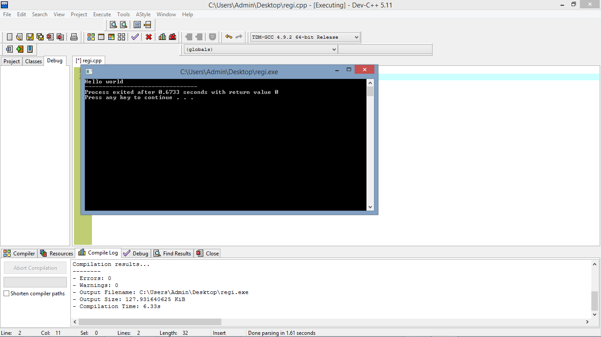

Write First C language
C programming text editors:
- Dev-C++
- Visual code studio
- Embarcadero
- Turboc C++
It's output after compiling the program

Let us explain those codes above
#
In program # it called "preprocessor".
It include the library of C into the program before the execution of program.
include
It helps to include the header file into the program
stdio
stdio is stands for standard input output.
It is a collection of predefined function/methods.
It is also called library of C.
int
It is keyword.
It means that values is being returned by the function
main
It is the function which is called the entry point of any program.
The execution of any program starts from the main function.
If in a program there is only one function then it should be main function.
printf
It is a predefined function which is used to print information or data on the output screen.
It is defined in the stdio.h header file.